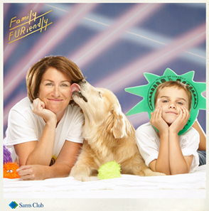
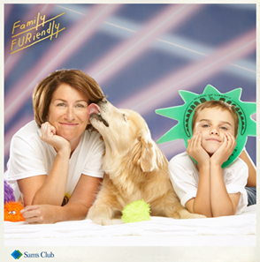

client
Main roles
Category
Project timeline
The brief
Sam's Club was looking to grow sales for it's pet supplies department.
The retail giant wanted to explore social media platforms as a way to establish a Sam's Club as a destination for pet owners.
The challenge
Most audiences didn't know Sam's Club had a great and affordable pet supply selection. So we had to create a campaign that established Sam's Club as a pet store destination for pet owners across the US.
 

The solution
We launched a retro themed Facebook and Instgram campaign that captured people's quirky relationships with their beloved pets. The Facebook ads network offered targeting tools that allowed us to advertise directly to pet owners on the social media platform.